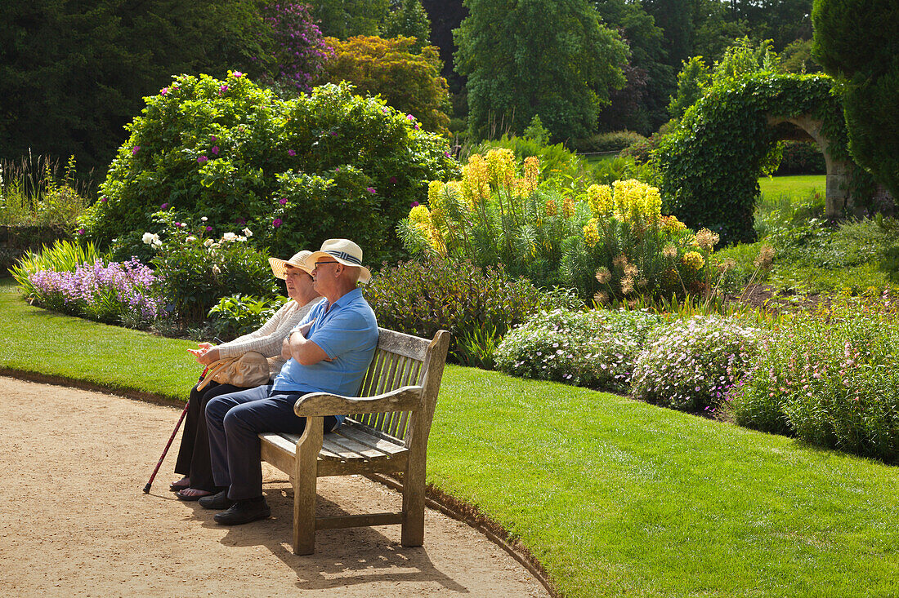

02 Our origin
A family house
that became a table
In 1998, chef Elena Morales and her husband Rafael inherited a crumbling carmen on the slopes of the Albaicín. Instead of selling it, they restored the house stone by stone and opened a dining room of just four tables, cooking the dishes of Elena's grandmother with produce from the family orchard.
Word spread slowly, and then all at once. Today their daughter, chef Lucía Morales, leads the kitchen, but the spirit is the same: a house where guests are received, not served.
-
1998
The carmen opens with four tables and a garden terrace.
-
2009
First Michelin star and the opening of the wine cellar.
-
2018
Lucía Morales takes over the kitchen as head chef.
-
2023
Second Michelin star and Repsol Guide "Three Suns".